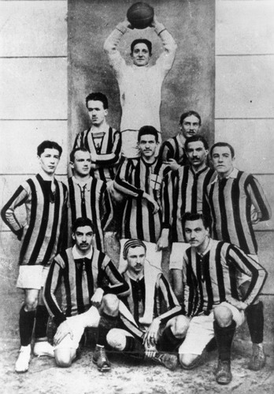
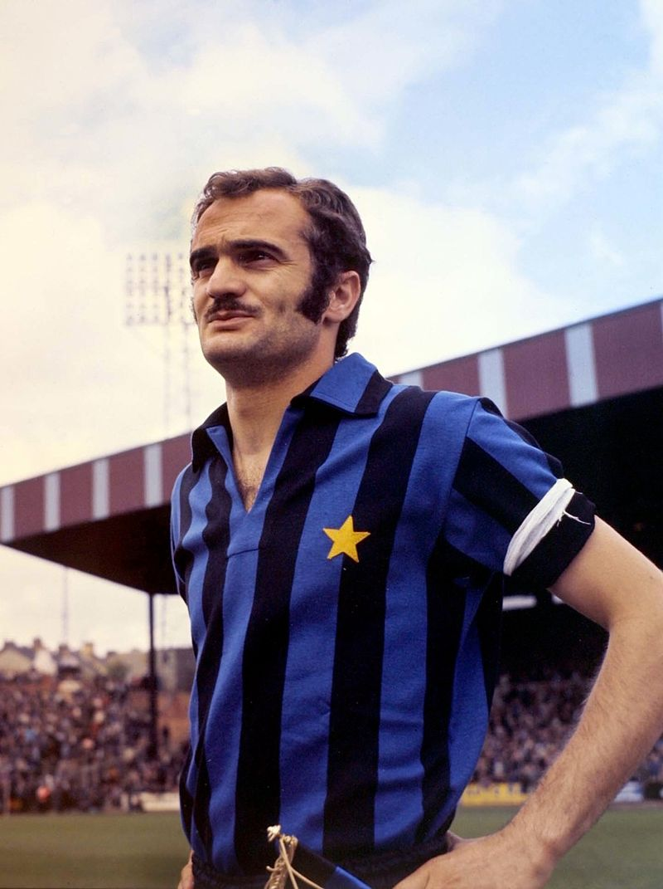

HISTORY
The club was founded on 9 March 1908 as Football Club Internazionale, following the schism with the Milan Cricket and Football Club (now A.C. Milan). The name of the club derives from the wish of its founding members to accept foreign players as well as Italians.
The club won its very first championship in 1910 and its second in 1920. The captain and coach of the first championship winning team was Virgilio Fossati, who was later killed in battle while serving in the Italian army during World War I.
In 1922, Inter remained in the top league after winning two play-offs. Six years later, during the Fascist era, the club was forced to merge with the Unione Sportiva Milanese and was renamed Società Sportiva Ambrosiana.[18] The team wore white jerseys during this time with a red cross emblazoned on it. The jersey's design was inspired by the flag and coat of arms of the city of Milan. In 1929, club chairman Oreste Simonotti changed the club's name to Associazione Sportiva Ambrosiana, however supporters continued to call the team Inter, and in 1931 new chairman Pozzani caved in to shareholder pressure and changed the name to Associazione Sportiva Ambrosiana-Inter.
Their first Coppa Italia (Italian Cup) was won in 1938–39, led by the iconic Giuseppe Meazza, after whom the San Siro stadium is officially named. A fifth championship followed in 1940, despite Meazza incurring an injury. After the end of World War II the club regained its original name, winning its sixth championship in 1953 and its seventh in 1954.
In 1960, manager Helenio Herrera joined Inter from Barcelona, bringing with him his midfield general Luis Suárez, who won the European Footballer of the Year in the same year for his role in Barcelona's La Liga/Fairs Cup double. He would transform Inter into one of the greatest teams in Europe. He modified a 5–3–2 tactic known as the "Verrou" ("door bolt") which created greater flexibility for counterattacks. The catenaccio system was invented by an Austrian coach, Karl Rappan. Rappan's original system was implemented with four fixed defenders, playing a strict man-to-man marking system, plus a playmaker in the middle of the field who plays the ball together with two midfield wings. Herrera would modify it by adding a fifth defender, the sweeper or libero behind the two centre backs. The sweeper or libero who acted as the free man would deal with any attackers who went through the two centre backs. Inter finished third in the Serie A in his first season, second the next year and first in his third season. Then followed a back-to-back European Cup victory in 1964 and 1965, earning him the title "il Mago" ("the Wizard"). The core of Herrera's team were the attacking fullbacks Tarcisio Burgnich and Giacinto Facchetti, Armando Picchi the sweeper, Suárez the playmaker, Jair the winger, Mario Corso the left midfielder, and Sandro Mazzola, who played on the inside-right.
In 1964, Inter reached the European Cup Final by beating Borussia Dortmund in the semi-final and Partizan in the quarter-final. In the final, they met Real Madrid, a team that had reached seven out of the nine finals to date. Mazzola scored two goals in a 3–1 victory, and then the team won the Intercontinental Cup against Independiente. A year later, Inter repeated the feat by beating two-time winner Benfica in the final held at home, from a Jair goal, and then again beat Independiente in the Intercontinental Cup.
In 1967, with Jair gone and Suárez injured, Inter lost the European Cup Final 2–1 to Celtic. During that year the club changed its name to Football Club Internazionale Milano.

Inter squad in 1910

Sandro Mazzola played for the highly successful Inter team remembered by the name of "La Grande Inter", during the 1960s